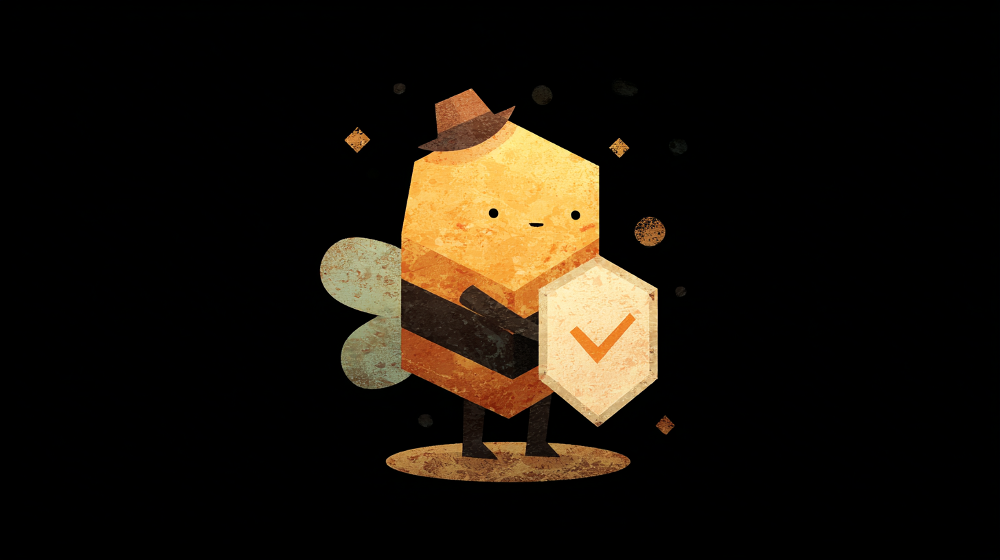
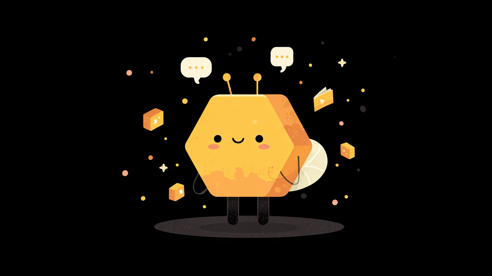

Today everyone has their own AI in a private chat, and none of it adds up. Beevibe gives your team named AI specialists — shared across everyone, with memories that grow, and the ability to ask any other agent for help. What one teammate's AI figures out, the next teammate's AI already knows.

Not "Claude." auth-agent. db-agent. infra-agent. Each one has an identity, a domain, and a memory that compounds across every session it runs — yours and your teammates'.

When yours runs out of domain, it tags the specialist who has it, even across people. The answer lands in the shared room — where every human and agent on the team can see it.
Knowledge moves between agents, with the original learner attached. No more rediscovering the same answer in three private chats. No two-hour sync to re-share what your AIs already worked out.
docker compose up -d
pnpm dev
brew install beevibe-ai/tap/beevibe-daemon
Sign up at the web app and meet your team agent.
Set up your team's shared AI in five minutes. Apache-2.0, your keys, your machine.